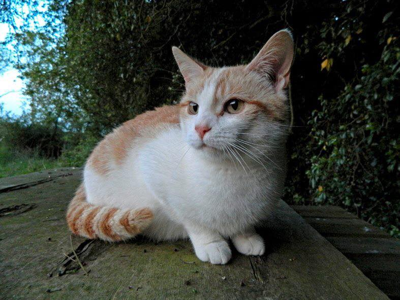
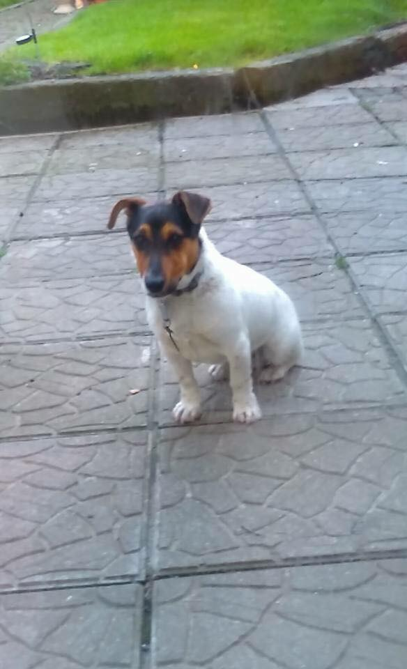
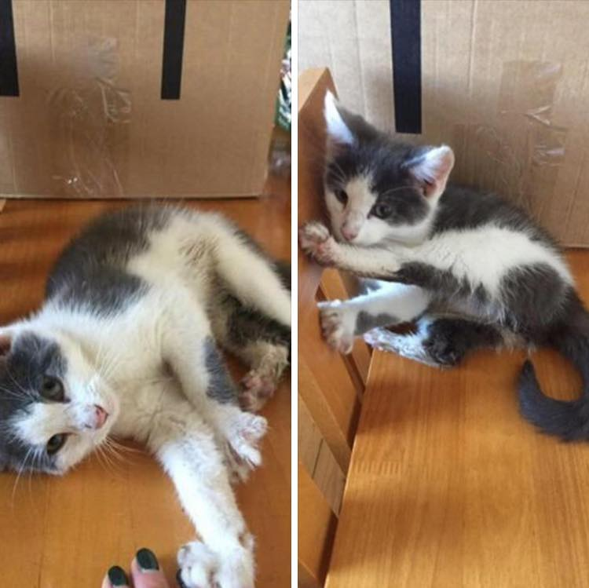
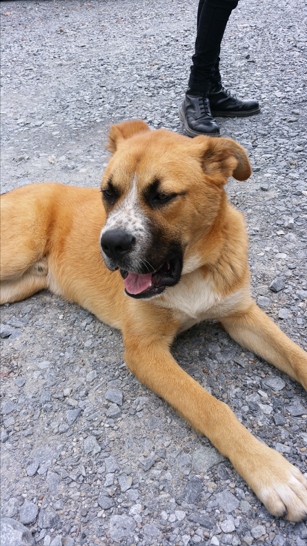
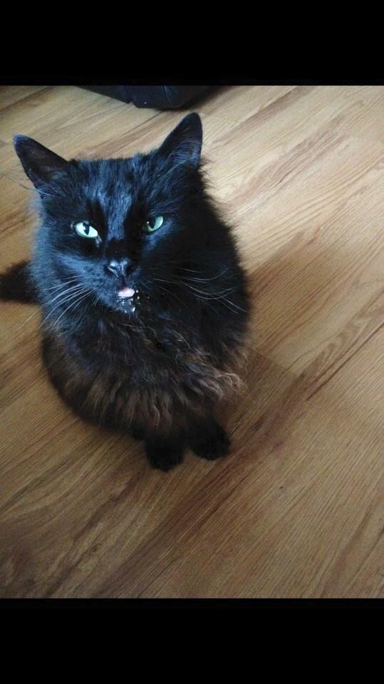
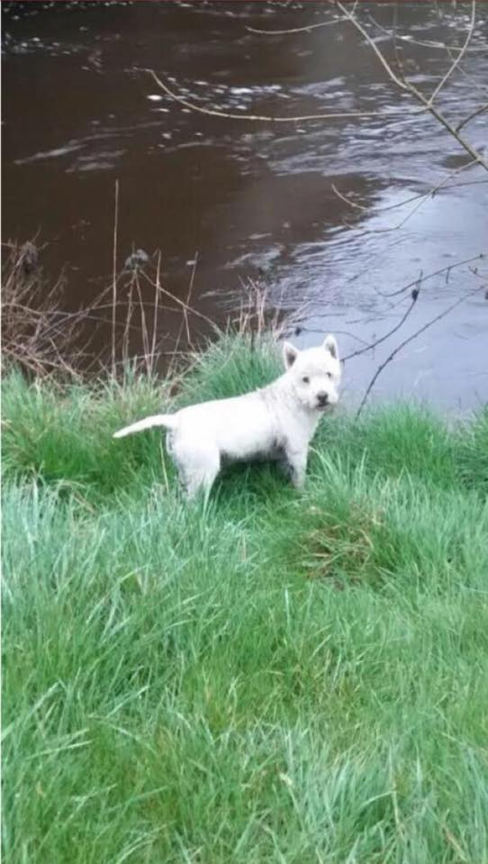
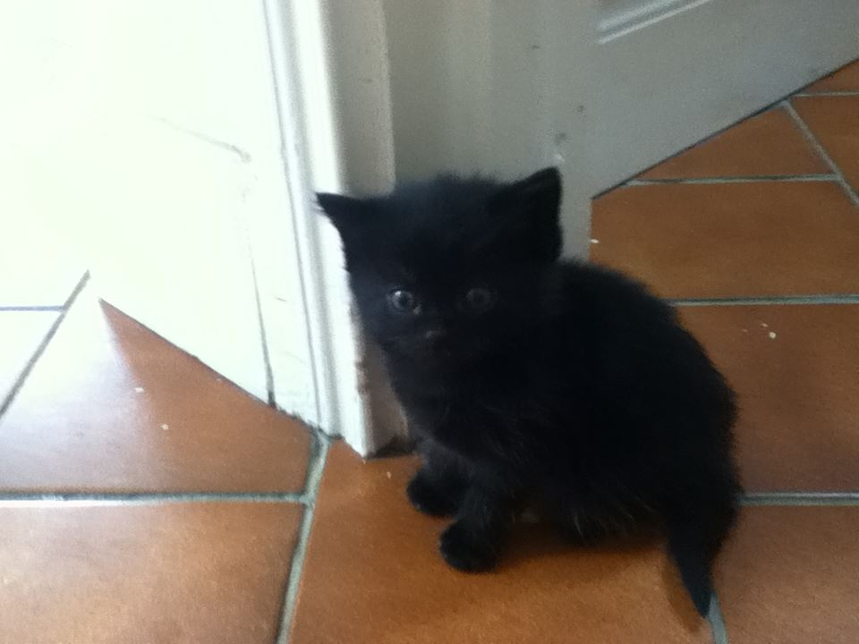
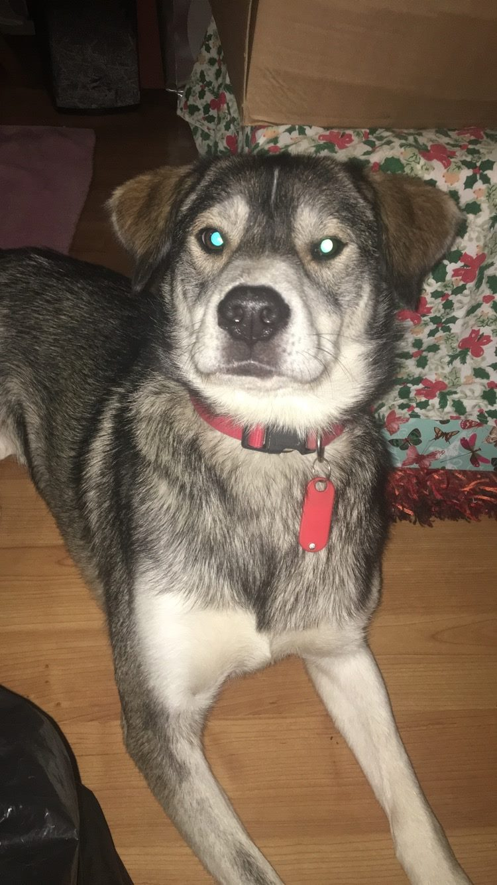

FOUND: 24.05.2016
The young female has turned up in the Longwood area the last few days. Anyone
know who she belongs to or may be missing her?
LOST AND FOUND
Please contact us if you have any information on any of the animals in the images below.
FOUND


Update: Now in the Meath pound
Still looking for the owners of this little guy. He was found on Saturday after having been reported as running frantically around the Mullaghaboy industrial estate in Navan. Not microchipped, no ID tag.
Still looking for the owners of this little guy. He was found on Saturday after having been reported as running frantically around the Mullaghaboy industrial estate in Navan. Not microchipped, no ID tag.

Young Kitten found in Kells, Co Meath.
Please get in touch at lasthopequeries@gmail.com with any information.

FOUND 05/09/2015
A lovely dog wandered into a business premises in Damastown Industrial Estate, near Blanchardstown. Finder has taken him home to keep him safe from very busy traffic but can't keep him for long. The owner can get his number from Blanchardstown Garda station. A really friendly and healthy dog, his owners must be missing him! Please share as much as possible to get him home. Currently with finder
A lovely dog wandered into a business premises in Damastown Industrial Estate, near Blanchardstown. Finder has taken him home to keep him safe from very busy traffic but can't keep him for long. The owner can get his number from Blanchardstown Garda station. A really friendly and healthy dog, his owners must be missing him! Please share as much as possible to get him home. Currently with finder
LOST

Black, long haired, male cat missing from Coolock, Co Dublin since the 17th of May.
Neutered, no collar, not microchipped. 14 years old, family pet. Please contact
Stephanie on 086-0858556 if you have any information.

MISSING
Paco is a 6yo male West Highland Terrier, he is missing from the Boardsmill area, 6 miles west of Trim since 25/12/2017. He's wearing a collar and at the moment, Paco's hair is much longer than in photo Please contact Alex on 0860434612 with any information.
Paco is a 6yo male West Highland Terrier, he is missing from the Boardsmill area, 6 miles west of Trim since 25/12/2017. He's wearing a collar and at the moment, Paco's hair is much longer than in photo Please contact Alex on 0860434612 with any information.

MISSING: 8 week-old kitten missing from Kildalkey. She may have travelled
in a car engine between Corballis Kildalkey and Trim. Owners are very worried about this little one if anyone has found her
or has any info please contact us.

**MISSING**Lola went missing on Wednesday afternoon from Clonee
Co.meath / Dublin 15 area. . She is chipped and was wearing a red collar when she left😩 if
you have any info please contact 0858384652 or if you could share her picture we’d be very grateful 🐾